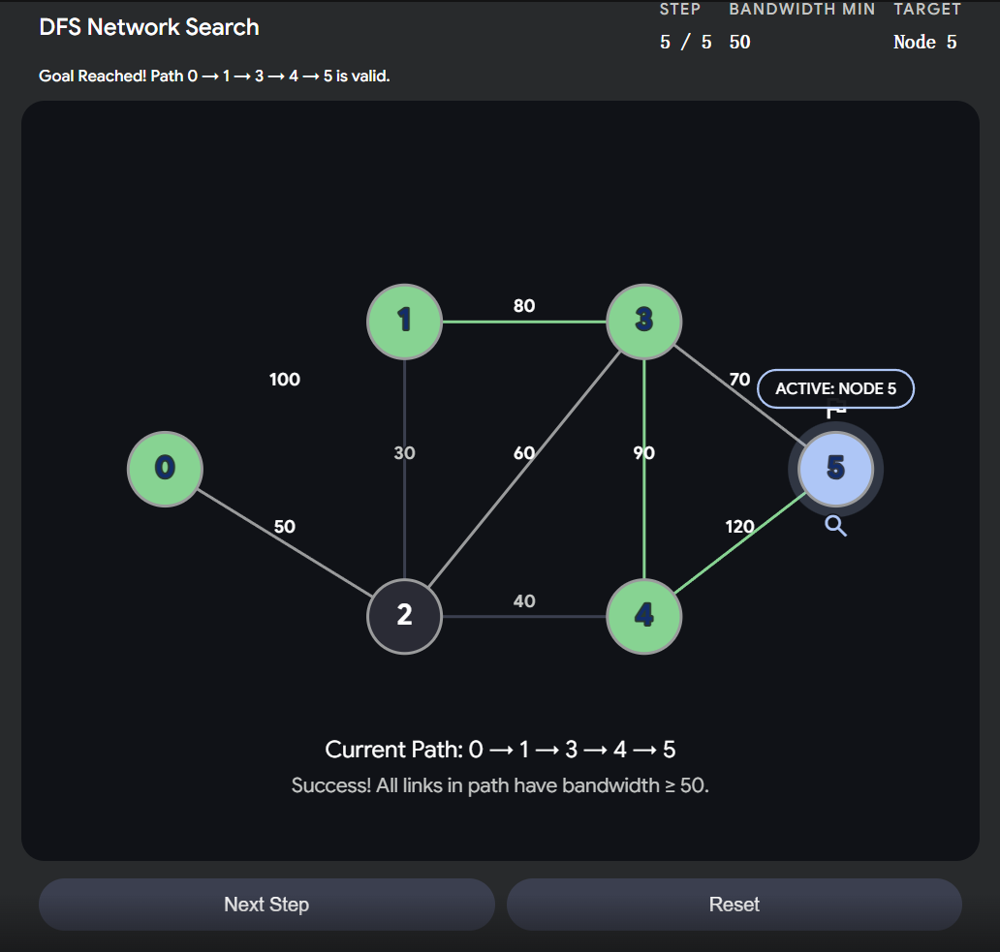
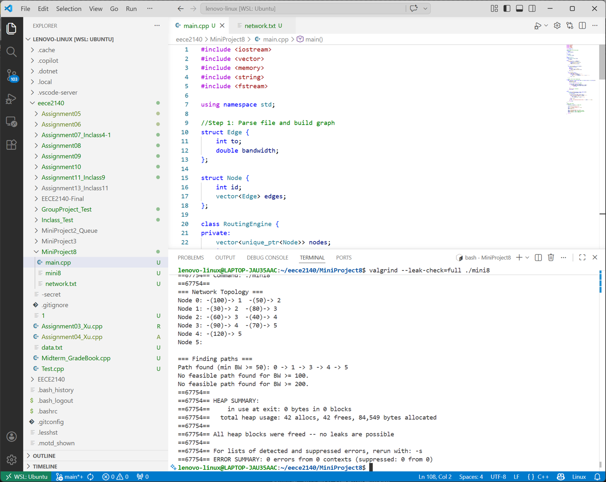

Overview项目概述
A C++ network routing engine that parses a weighted graph of nodes and bandwidth-labeled links, then applies depth-first search to find feasible paths that meet a minimum bandwidth constraint. The implementation uses smart pointers (std::unique_ptr) for safe memory ownership and was validated leak-free under Valgrind. An accompanying visualization steps through the DFS traversal and highlights the discovered path.一个 C++ 网络路由引擎，它解析由节点和带带宽标注的链路组成的加权图，再用深度优先搜索（DFS）寻找满足最小带宽约束的可行路径。实现中使用智能指针（std::unique_ptr）安全管理内存，并通过 Valgrind 验证无内存泄漏。配套的可视化会逐步展示 DFS 遍历过程并高亮找到的路径。
Gallery图库
Click any image to enlarge.点击任意图片可放大。

DFS network search visualization showing the validated path 0-1-3-4-5 with all links meeting the minimum bandwidth threshold.DFS 网络搜索可视化，展示验证通过的路径 0-1-3-4-5，且所有链路都满足最小带宽阈值。

Valgrind output confirming the routing engine runs with no memory leaks alongside the DFS source code.Valgrind 输出，连同 DFS 源代码一起确认路由引擎运行时无内存泄漏。